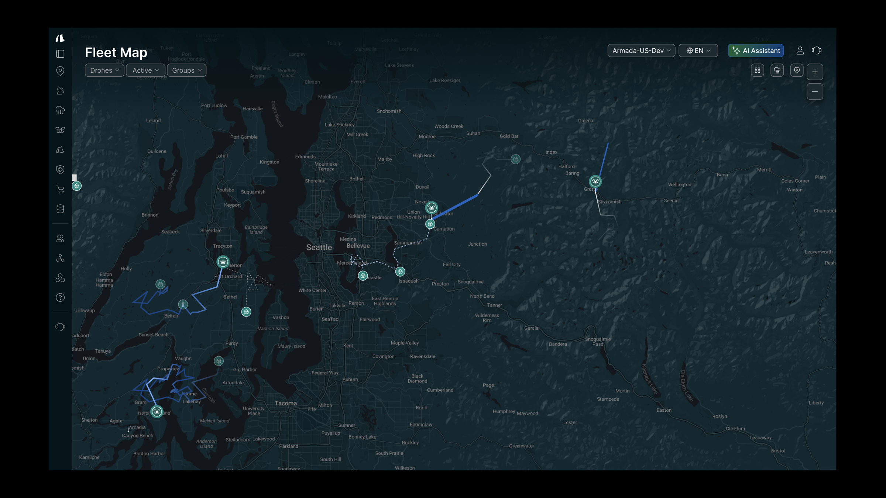
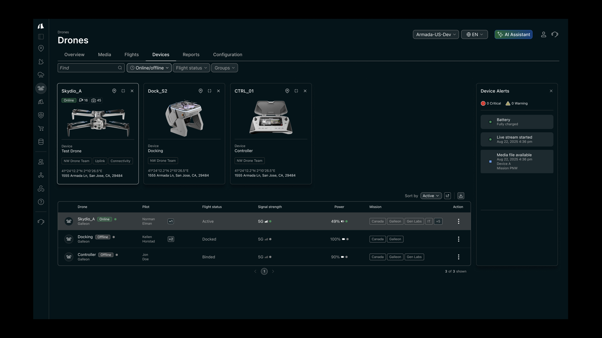
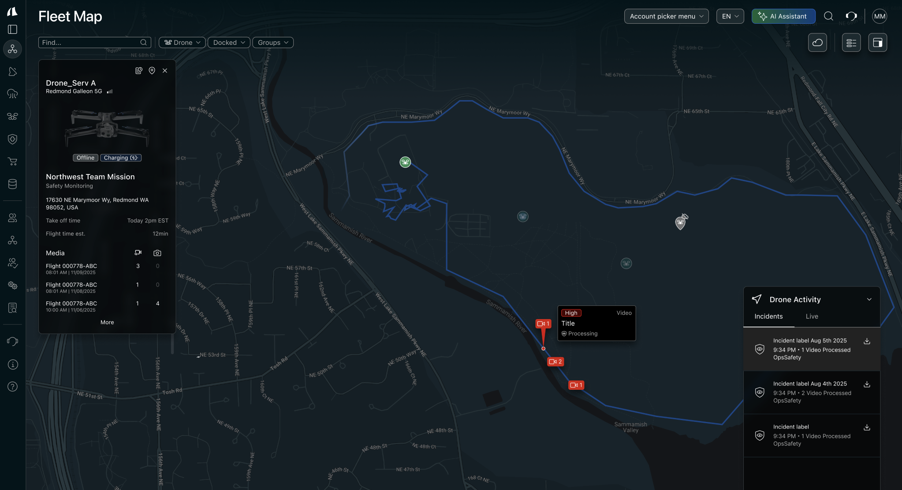
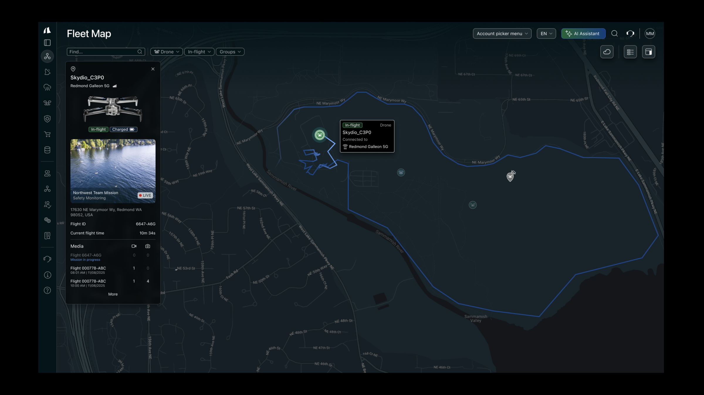

Armada · Atlas
Track multiple drones without losing sight of the mission.
I designed the fleet-map experience for operating multiple drones across large areas with docking stations. The work connected live tracking, route tracers, AI-synthesized incidents, and a panel that brings the drone’s camera view, mechanical status, and mission status onto the map.

Cover a large area with a coordinated fleet
The design problem was how to operate multiple drones across a large area while keeping track of each flight. Docking stations were part of that coverage model. The fleet map needed to show where drones were, how they were moving, and which incidents needed attention during a live mission.
Live tracking
See where each drone is during the mission.
Fleet coverage
Coordinate multiple drones and docking stations across a large area.
Incident context
Connect AI-synthesized incident information to its location on the route.
Make incidents understandable on the map
An incident marker needs to tell more than where something happened. I connected the marker to the drone’s route and live panel, so operators could review the AI-synthesized summary without losing track of the flight.
Incident / selected flight
Understand what happened
An AI-synthesized summary connects the event to its location on the route.
- Mechanical status
- Alongside the camera
- Mission status
- Alongside the route
Context for the incident
- TypeWhat was detected?
- ZoneWhere did it happen?
- TimeWhen did it happen?
- ProximityHow close is the asset?
- PersistenceIs the detection continuing?
Keep the route, camera, and live status together
The map panel was designed to work as the drone’s viewfinder while also showing mechanical and mission status. Keeping those views together lets the operator review an incident in the context of the flight, rather than treating the video and map as separate experiences.
01 Keep the flight in view
The tracer and incident locations stay visible while the operator reviews the drone.
Selected drone / connected panel
Same flight context02 See what the drone sees
03 Mechanical status
Aircraft condition alongside the camera view.
04 Mission status
Flight progress alongside the route.
What I owned
- The fleet-map tracking experience for multiple drones and docking stations covering large areas.
- The visual treatment of route tracers and incident indicators on the fleet map.
- The interaction design for AI-synthesized incidents and a live map panel combining the camera view, mechanical status, and mission status.
01
Check the equipment
The inventory view lists drones, docks, and controllers, with device status and alerts available before an operator opens a live feed.

02
Follow the fleet on the map
I designed the route tracer to show a drone’s path on the fleet map, along with the visual indicators for incidents. These details make the selected flight readable within a map that also needs to support multiple drones.

03
A live viewfinder with mission and mechanical status
I designed the map panel to serve as the drone’s live viewfinder and show mechanical and mission status. The operator can keep the camera, the flight route, and the drone’s status in view during a live situation.
